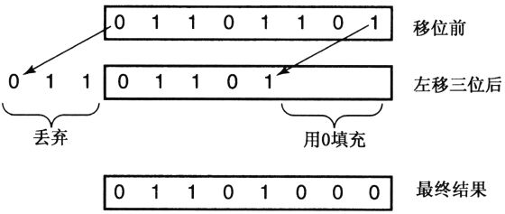
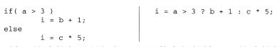

C proporciona todos los operadores que desea que tenga un lenguaje de programación [1] , e incluso proporciona algunos operadores que no espera. De hecho, una de las deficiencias de C que está siendo criticada por muchas personas es su amplia variedad de operadores. Esta característica de C hace que sea difícil de dominar. Por otro lado, muchos operadores de C tienen el valor incomparable de los operadores de otros lenguajes, que es una de las razones por las que C es adecuado para desarrollar una amplia gama de aplicaciones.
Después de introducir los operadores, discutiré las reglas de evaluación de expresiones, incluida la precedencia de los operadores y las conversiones aritméticas.
Para facilitar la explicación, clasificaré a los operadores según su función o cómo se utilizan. Para facilitar la referencia, es más conveniente agruparlos por nivel de mérito. La tabla 5.1 más adelante en este capítulo está organizada de esta manera.
C proporciona todos los operadores aritméticos de uso común:
+ - * / %Excepto por el operador%, los otros operadores son aplicables tanto a los tipos de punto flotante como a los enteros. Cuando ambos operandos del operador / son enteros, realiza una operación de división de enteros, en otros casos realiza una división de números de punto flotante [2] . % Es el operador de módulo, acepta dos operandos enteros, divide el operando izquierdo por el operando derecho, pero devuelve el resto en lugar del cociente.
Los programadores en lenguaje ensamblador ya están muy familiarizados con las operaciones de turno. Para aquellos lectores con una gran adaptabilidad, aquí hay una breve introducción. La operación de cambio simplemente mueve los bits de un valor hacia la izquierda o hacia la derecha. En el desplazamiento a la izquierda, los bits más a la izquierda del valor se descartan y los bits adicionales a la derecha se rellenan con 0. La figura 5.1 es un ejemplo de un desplazamiento a la izquierda, que realiza una operación de desplazamiento a la izquierda de 3 bits en un valor de 8 bits y lo muestra en forma binaria. Todos los bits de este valor se desplazan hacia la izquierda en 3 posiciones, los bits desplazados fuera del borde izquierdo se pierden y los bits que quedan vacíos a la derecha se rellenan con 0.
La operación de cambio a la derecha tiene un problema que la operación de cambio a la izquierda no enfrenta: cuando se cambia un nuevo bit desde la izquierda, se pueden seleccionar dos opciones. Uno es el desplazamiento lógico, el bit desplazado hacia la izquierda se rellena con 0; el otro es el desplazamiento aritmético, el bit desplazado hacia la izquierda está determinado por el bit de signo original del valor, si el bit de signo es 1, el desplazamiento los bits son todos 1, el bit de signo Si el valor es 0, los bits desplazados son todos 0, de modo que las formas positiva y negativa del número original se pueden mantener sin cambios. Si el valor 10010110 se desplaza dos bits hacia la derecha, el resultado del desplazamiento lógico es 00100101, pero el resultado del desplazamiento aritmético es 11100101. El desplazamiento aritmético a la izquierda y el desplazamiento lógico a la izquierda son iguales, solo difieren cuando se desplaza a la derecha y solo cuando el operando es negativo.

Figura 5.1 Desplazamiento a la izquierda en 3 bits
El operador de cambio a la izquierda es << y el operador de cambio a la derecha es >>. El valor del operando izquierdo se desplazará por el número de bits especificado por el operando derecho. Ambos operandos deben ser de tipo integral.
advertir:
El estándar establece que todas las operaciones de cambio realizadas en valores sin signo son cambios lógicos, pero para los valores con signo, el uso de cambios lógicos o aritméticos depende del compilador. Puede escribir un programa de prueba simple para ver qué método de cambio usa su compilador. Pero su prueba no garantiza que otros compiladores utilizarán el mismo método. Por lo tanto, si un programa utiliza una operación de desplazamiento a la derecha firmada, no es portátil.
advertir:
Preste atención a cambios como este formulario:
a << -5¿Qué significa desplazarse a la izquierda en -5 bits? ¿Significa desplazar 5 bits hacia la derecha? ¿O no ha cambiado en absoluto? En una determinada máquina, esta expresión en realidad realiza una operación de desplazamiento a la izquierda de 27 bits, ¡no se puede entender! ¿Qué sucede si el número de bits desplazados es mayor que el número de operandos?
El estándar establece que el comportamiento de este tipo de desplazamiento no está definido, por lo que lo determina el compilador. Sin embargo, pocos diseñadores de compiladores indicarán claramente lo que sucederá si esto sucede, por lo que es probable que sus resultados no tengan sentido. Por lo tanto, debe evitar usar este tipo de turnos porque sus efectos son impredecibles y los programas que utilizan este tipo de turnos no son portátiles.
La función del Programa 5.1 usa una operación de desplazamiento a la derecha para contar el número de bits con un valor de 1 en un valor. Acepta un parámetro sin signo (esto es para evitar la ambigüedad del desplazamiento a la derecha) y usa el operador% para determinar si el bit más a la derecha es el más distinto de cero. Después de aprender los operadores &, <= y + =, mejoraremos aún más esta función.
/*
** 这个函数返回参数值中值为1的位的个数。
*/
int
count_one_bits( unsigned value )
{
int ones;
/*
** 当这个值还有一些值为1的位时...
*/
for( ones = 0; value != 0; value = value >> 1 )
/*
** 如果最低位的值为1，计数增1。
*/
if( value % 2 != 0 )
ones = ones + 1;
return ones;
}Procedimiento 5.1 Contar el número de bits con un valor de 1 en un valor: versión preliminar
count_1a.c
Los operadores de bits realizan operaciones lógicas como AND, OR y XOR (OR exclusivo) en cada bit de sus operandos. De manera similar, los programadores en lenguaje ensamblador están muy familiarizados con este tipo de operaciones, pero para cuidar de los demás, aquí hay una breve introducción. Al realizar una operación Y en dos bits, si ambos bits son 1, el resultado es 1; de lo contrario, el resultado es 0. Al realizar una operación OR en dos bits, si ambos bits son 0, el resultado es 0; de lo contrario, el resultado es 1. Finalmente, cuando dos bits son XORed, si los dos bits son diferentes, el resultado es 1, y si los dos bits son iguales, el resultado es 0. Estas operaciones se resumen a continuación en forma de gráfico.
Los operadores de bits son:
& | ^Realizan operaciones AND, OR y XOR respectivamente. Requieren que el operando sea de tipo entero, y realizan operaciones específicas en los bits correspondientes a los operandos, y operan en cada bit de los operandos izquierdo y derecho cada vez. Por ejemplo, suponga que el valor binario de la variable a es 00101110 y el valor binario de la variable b es 01011011. El resultado de a & b es 00001010, el resultado de a | b es 01111111 y el resultado de a ^ b es 011110101.
La siguiente expresión muestra cómo puede utilizar operadores de desplazamiento y operadores de bits para manipular bits individuales en un valor entero. La expresión asume que la variable bit_number es un valor entero, y su rango es de 0 al número de bits del valor entero menos 1, y los bits del valor entero se cuentan de derecha a izquierda. El primer ejemplo establece el bit especificado en 1.
value = value | 1 << bit_number;El siguiente ejemplo borra el bit especificado a 0 [3] .
value = value & ~ ( 1 << bit_number );Estas expresiones a menudo se escriben en forma de operadores | = y & =, que se introducirán en la siguiente sección. Por último, la siguiente expresión prueba el bit especificado. Si el bit se ha establecido en 1, el resultado de la expresión es un valor distinto de cero.
value & 1 << bit_numberFinalmente, discutimos el operador de asignación, que está representado por un signo igual. La asignación es un tipo de expresión, no un cierto tipo de declaración. Por lo tanto, siempre que se permita la aparición de expresiones, se permitirán asignaciones. La siguiente declaración
x = y + 3;Contiene dos operadores, + y =. La suma se realiza primero, por lo que el operando de = es el valor de la variable x y la expresión y + 3. El operador de asignación almacena el valor del operando derecho en la ubicación especificada por el operando izquierdo. Pero la asignación también es una expresión y una expresión tiene un valor. El valor de la expresión de asignación es el nuevo valor del operando izquierdo, que se puede utilizar como operando de otros operadores de asignación, como se muestra en la siguiente declaración:
a = x = y + 3;La asociatividad de los operadores de asignación (el orden de evaluación) es de derecha a izquierda, por lo que esta expresión es equivalente a:
a = ( x = y + 3 );Su significado es exactamente el mismo que el de la siguiente combinación de declaraciones:
x = y + 3;
a = x;A continuación se muestra un ejemplo un poco más complicado.
r = s + ( t = u – v ) / 3;Esta declaración asigna el valor de la expresión u – v a t, luego divide el valor de t por 3, suma el resultado de la división ah y asigna el resultado a r. Aunque este método también es legal, tiene el mismo efecto si se reescribe en la siguiente forma.
t = u – v;
r = s + t / 3;De hecho, los últimos métodos de escritura son mejores porque son más fáciles de leer y depurar. Las personas pueden llegar fácilmente a los extremos al escribir expresiones para operaciones de asignación en línea y escribir expresiones que son difíciles de leer. Por lo tanto, antes de utilizar esta "función", asegúrese de que esta forma de escribir pueda aportar algunos beneficios tangibles.
advertir:
En la siguiente declaración, es incorrecto decir que a y x se les asigna el mismo valor:
a = x = y + 3;Si x es una variable de carácter, entonces el valor de y + 3 se truncará para que quepa en la variable de carácter. Entonces, el valor asignado por a es este valor truncado. En el siguiente error común, este truncamiento es la fuente del problema:
char ch;
...
while( ( ch = getchar() ) != EOF ) ...EOF requiere más dígitos de los que puede proporcionar un valor de carácter, por lo que getchar devuelve un valor entero en lugar de un valor de carácter. Sin embargo, almacenar el valor de retorno de getchar en ch primero hará que se trunque. Luego, este valor truncado se promueve a un número entero y se compara con EOF. Cuando este código con errores se ejecuta en una máquina que usa un juego de caracteres con signo, si se lee un byte con un valor de \ 377, el ciclo terminará, porque este valor es igual a EOF después de ser truncado y luego promocionado. Cuando este código se ejecuta en una máquina que usa un juego de caracteres sin firmar, ¡el ciclo nunca terminará!
Los operadores introducidos hasta ahora también tienen una forma de asignación compuesta:
+= -= *= /= %=
<<= >>= &= ^= |=Solo discutimos el operador + =, porque el resto de los operadores son muy similares a él, pero usan operadores diferentes. El uso del operador + = es el siguiente:
a += expression
Se lee como "agregar expresión a", y su función es equivalente a la siguiente expresión:
a = a + ( expression )
La única diferencia es que el operando izquierdo del operador + = (a en este caso) se evalúa solo una vez. Tenga en cuenta los paréntesis: garantizan que la expresión se haya evaluado por completo antes de realizar la operación de adición, incluso si contiene operadores con menor precedencia que la operación de adición.
¿Cuál es el punto de dos formas de aumentar el valor de una variable? Los diseñadores de K&R C creen que los operadores de asignación compuesta pueden permitir a los programadores escribir código con mayor claridad. Además, el compilador puede producir código más compacto. Ahora, la diferencia entre a = a + 5 y a + = 5 ya no es tan significativa, y los compiladores modernos producen código optimizado para estas dos expresiones sin muchos problemas. Pero considere las siguientes dos afirmaciones: si la función f no tiene efectos secundarios, son equivalentes.
a[ 2 * (y – 6*f(x)) ] = a[ 2 * (y – 6*f(x) ) ] + 1;
a[ 2 * (y – 6*f(x)) ] += 1;En el primer formulario, la expresión utilizada para seleccionar la posición de incremento debe escribirse dos veces, una en el lado izquierdo del número de asignación y otra en el lado derecho del número de asignación. Dado que el compilador no tiene forma de saber si la función f tiene efectos secundarios, debe calcular el valor de la expresión del subíndice dos veces. La segunda forma es más eficiente porque el subíndice solo se calcula una vez.
insinuación:
La ventaja más importante del operador + = es que hace que el código fuente sea más fácil de leer y escribir. Si el lector desea juzgar la función de la primera oración del ejemplo anterior, debe verificar cuidadosamente las dos expresiones de subíndice para verificar que sean realmente iguales, y luego debe verificar si la función f tiene efectos secundarios. Pero la segunda oración no tiene ese problema. Y es más conveniente escribir que la primera oración, y la posibilidad de errores tipográficos es mucho menor. Por estas razones, debería intentar utilizar operadores de asignación compuesta.
Ahora podemos usar el operador de asignación compuesta para reescribir el Programa 5.1, el resultado se muestra en el Programa 5.2. El operador de asignación compuesta también puede simplificar la expresión utilizada para establecer y borrar un solo bit en el valor de la variable:
value |= 1 << bit_number;
value &= ~ ( 1 << bit_number );
/*
** 这个函数返回参数值中值为1的位的个数。
*/
int
count_one_bits( unsigned value )
{
int ones;
/*
** 当这个值中还存在一些值为1的位时.. */
for( ones = 0; value != 0; value >>= 1 )
/*
** 如果最低位为1，增加计数器的值。
*/
if( ( value & 1 ) != 0 )
ones += 1;
return ones;
}Procedimiento 5.2 Cuente el número de bits con un valor de 1 en un valor: versión final
count_1b.c
C tiene algunos operadores unarios, es decir, operadores que aceptan solo un operando. Son
! ++ - & sizeof
~ -- + * (类型)Introduzcamos estos operadores uno por uno.
El! Operador realiza una operación lógica inversa en su operando; si el operando es verdadero, el resultado es falso, y si el operando es falso, el resultado es verdadero. Al igual que el operador relacional, este operador en realidad produce un resultado entero, 0 o 1.
El operador ~ realiza la operación de complemento en el operando del tipo integral. Todos los bits del operando que originalmente eran 1 se convierten en 0, y todos los bits que originalmente eran 0 se convierten en 1.
-El operador produce el valor negativo del operando.
El operador + produce el valor del operando; en otras palabras, no hace nada. La razón por la que se proporciona este operador es para formar un par simétrico con el operador.
El operador & genera la dirección de su operando. Por ejemplo, la siguiente declaración declara una variable entera y un puntero a una variable entera. A continuación, el operador & toma la dirección de la variable ay la asigna a la variable puntero.
int a, *b;
...
b = &a;Este ejemplo muestra cómo puede asignar la dirección de una variable existente a una variable de puntero.
El operador * es un operador de acceso indirecto, se utiliza con un puntero para acceder al valor apuntado por el puntero. Una vez completada la operación de asignación del ejemplo anterior, el valor de la expresión b es la dirección de la variable a, pero el valor de la expresión * b es el valor de la variable a.
El operador sizeof determina la longitud del tipo de su operando, expresada en bytes. El operando puede ser una expresión (generalmente una sola variable) o puede ser un nombre de tipo entre paréntesis. A continuación, se muestran dos ejemplos:
sizeof ( int ) sizeof xLa primera expresión devuelve el número de bytes de una variable entera y el resultado depende naturalmente del entorno que esté utilizando. La segunda expresión devuelve el número de bytes ocupados por la variable x. Tenga en cuenta que, por definición, la longitud de una variable de carácter es de 1 byte. Cuando el operando de sizeof es un nombre de matriz, devuelve la longitud de la matriz en bytes. También es legal agregar paréntesis alrededor de los operandos de una expresión, como se muestra a continuación:
sizeof( x )Esto se debe a que los paréntesis siempre son legales en las expresiones. Al juzgar la longitud de la expresión no es necesario evaluar la expresión, por lo que sizeof (a = b + 1) no asigna ningún valor a a.
(Tipo) se llama operador de molde (molde), que se utiliza para convertir explícitamente el valor de una expresión de otro tipo. Por ejemplo, para obtener el valor de coma flotante correspondiente a la variable entera a, puede escribir
(float)aEl nombre conversión forzada es fácil de recordar, tiene una alta prioridad, por lo que poner una conversión forzada antes de una expresión solo cambiará el tipo del primer elemento de la expresión. Si desea convertir el resultado de la expresión completa, debe encerrar la expresión completa entre paréntesis.
Finalmente, discutimos el operador de incremento ++ y el operador de decremento -. Si hay algún operador que pueda captar la "sensación" de la programación en C, debe ser uno de estos dos operadores. Hay dos variantes de estos dos operadores, a saber, la forma de prefijo y la forma de sufijo. Cualquiera de las variantes de los dos operadores requiere una variable en lugar de una expresión como operando. De hecho, esta restricción no es tan estricta. Este operador en realidad solo requiere que el operando sea un "lvalue", pero aún no hemos discutido este tema. Esta restricción requiere que el operador ++ o - solo pueda trabajar en expresiones que pueden estar en el lado izquierdo del símbolo de asignación.
El operador prefijo ++ aparece antes del operando. El valor del operando aumenta y el valor de la expresión es el valor después del aumento del operando. La forma de sufijo del operador ++ aparece después del operando. El valor del operando aún se incrementa, pero el valor de la expresión es el valor antes de que se incremente el operando. Si considera la posición del operador, esta regla es fácil de recordar: el operador antes del operando aumenta su valor antes de que se use el valor de la variable; el operador después del operando aumenta después de que se usa el valor de la variable Su valor. - El principio operativo del operador es el mismo, excepto que realiza una operación de disminución en lugar de una operación de incremento.
Aquí hay unos ejemplos.
int a, b, c, d;
...
a = b = 10; a和b得到值10
c = ++a; a增加至11，c得到的值为11
d = b++; b增加至11，但d得到的值仍为10Los comentarios anteriores describen los resultados de estos operadores, pero no explican cómo se obtienen estos resultados. En términos abstractos, los operadores de valor agregado en forma de prefijo y sufijo hacen una copia del valor de una variable. El valor utilizado para la expresión circundante es esta copia (en el ejemplo anterior, "expresión circundante" se refiere a la operación de asignación). El operador de prefijo aumenta el valor de la variable antes de la copia y el operador de sufijo aumenta el valor de la variable después de la copia. El resultado de estos operadores no es la variable que modifican, sino la copia del valor de la variable, es muy importante reconocer esto. Es importante porque explica por qué no puede usar estos operadores de esta manera:
++a = 10;El resultado de ++ a es una copia del valor de a, no la variable en sí, no se le puede asignar un valor.
Este tipo de operador se utiliza para probar varias relaciones entre operandos. C proporciona todos los operadores relacionales comunes. Sin embargo, existe una trampa en este grupo de operadores. Estos operadores son:
> >= < <= != ==Las funciones de los primeros cuatro operadores se pueden ver de un vistazo. El operador! = Se usa para probar "no igual", y el operador == se usa para probar "igual".
Aunque las funciones de los operadores relacionales son las mismas que esperaba, la forma en que logran funciones es ligeramente diferente de lo que esperaba. El resultado de estos operadores es un valor entero, no un valor booleano. Si los operandos en ambos extremos cumplen la relación especificada por el operador, el resultado de la expresión es 1, si no, el resultado de la expresión es 0. El resultado del operador relacional es un valor entero, por lo que puede asignarse a una variable entera, pero normalmente se utilizan en declaraciones if o while como expresiones de valor medido. Recuerde cómo funcionan estas afirmaciones: si el resultado de la expresión es 0, se considera falso; si el resultado de la expresión es cualquier valor distinto de cero, se considera verdadero. Todos los operadores relacionales funcionan con el mismo principio: si los operandos en ambos extremos del operador no se ajustan a la relación especificada por él, el resultado de la expresión es 0. Por lo tanto, hablando puramente funcionalmente, no necesitamos tipos de datos booleanos adicionales.
C usa números enteros para representar valores booleanos, lo que conduce directamente a algunos métodos abreviados, que se usan con mucha frecuencia en la medición de expresiones.
En cada par de oraciones, las funciones de las dos oraciones son las mismas. La prueba "no igual a 0" se puede lograr utilizando operadores relacionales o simplemente probando el valor de la expresión. De manera similar, la prueba "igual a 0" también se puede lograr probando el valor de la expresión y luego tomando el inverso lógico del valor del resultado. El formulario que prefiera utilizar es puramente una cuestión de estilo, pero debe tener cuidado al utilizar el último formulario. ¡debido a! Los operadores tienen una alta precedencia, por lo que si la expresión contiene otros operadores, será mejor que pongas la expresión entre paréntesis.
advertir:
Si el siguiente error no es el error más común para los programadores C novatos, es al menos el error más molesto. La mayoría de los otros lenguajes usan el operador = para comparar la igualdad. En C, debe usar el signo igual doble == para realizar esta comparación y un signo = simple para las operaciones de asignación.
La trampa aquí es que es legal tener una asignación en la prueba de igualdad, no es un error gramatical [4] . Esta lamentable característica es precisamente la desventaja de que C no tiene el tipo booleano. Ambas expresiones son expresiones enteras legales, por lo que son legales en este contexto.
¿Qué sucede si usa el operador incorrecto? Considere el siguiente ejemplo. Para los programadores de Pascal y Modula, no parece inapropiado:
x = get_some_value();
if( x = 5 )
执行某些任务x obtiene un valor de la función, pero luego asignamos 5 ax en lugar de comparar x con el valor literal 5, perdiendo así el valor obtenido de la función [5] . Este resultado, obviamente, no es la intención del programador. Sin embargo, aquí hay otro problema. Dado que el valor de la expresión es el nuevo valor (valor distinto de cero) de x, la instrucción if siempre será verdadera.
Debes desarrollar un hábito, cuando comparas la prueba de igualdad, debes verificar que lo que escribes es efectivamente el doble signo igual. Cuando descubra que el programa no se está ejecutando normalmente, compruebe rápidamente si el operador de comparación está escrito incorrectamente, lo que puede ahorrarle mucho tiempo de depuración.
Los operadores lógicos son && y ||. Estos dos operadores se parecen un poco a los operadores bit a bit, pero sus operaciones específicas son bastante diferentes: se utilizan para evaluar expresiones y probar si sus valores son verdaderos o falsos. Primero echemos un vistazo al operador &&.
expression1 && expression2
Si los valores de expression1 y expression2 son ambos verdaderos, entonces el valor de toda la expresión también es verdadero. Si el valor de cualquiera de las dos expresiones es falso, entonces el valor de toda la expresión es falso. Hasta ahora todo es normal.
Un aspecto interesante de este operador es que controla el orden en el que se evalúan las subexpresiones. Por ejemplo, la siguiente expresión:
a > 5 && a < 10La precedencia del operador && es menor que la precedencia de los operadores> y <, por lo que la subexpresión se combina de la siguiente manera:
( a > 5 ) && ( a < 10 )Sin embargo, a pesar de la menor precedencia del operador &&, todavía ejerce control sobre las dos expresiones relacionales. Así es como funciona: el operando izquierdo del operador && siempre se evalúa primero, y si su valor es verdadero, entonces el operando derecho se evalúa inmediatamente. Si el valor del operando izquierdo es falso, entonces el operando derecho ya no se evalúa, porque el valor de toda la expresión debe ser falso y el valor del operando derecho es irrelevante. El operador || también tiene las mismas características, primero evalúa el operando izquierdo, si su valor es verdadero, el operando derecho ya no se evalúa, porque el valor de toda la expresión se ha determinado en este momento. Este comportamiento se denomina a menudo " evaluación de cortocircuito (evaluación de cortocircuito)".
El orden de las expresiones debe ser correcto, lo cual es muy útil. El siguiente ejemplo es ilegal en Pascal estándar:
if ( x >= 0 && x < MAX && array[x] == 0 ) ...En C, este código primero verifica si el valor de x está dentro del rango legal del subíndice de la matriz. Si no es así, se ignora la expresión de referencia del subíndice en el código. Dado que Pascal evaluará todas las subexpresiones por completo, si el valor del subíndice es incorrecto, el programa seguirá fallando debido a referencias de subíndice no válidas aunque el programador haya trabajado duro para verificar el rango del valor del subíndice.
advertir:
Los operadores bit a bit a menudo se confunden con operadores lógicos, pero no son intercambiables. La primera diferencia entre ellos es que los operadores || y && tienen propiedades de cortocircuito. Si el valor de la expresión se puede determinar basándose en el operando izquierdo, ya no evaluará el operando derecho. Por el contrario, los operandos a ambos lados de los operadores | y & deben evaluarse.
En segundo lugar, los operadores lógicos se utilizan para probar valores cero y distintos de cero, mientras que los operadores de bits se utilizan para comparar los bits correspondientes en sus operandos. Aquí hay un ejemplo:
if( a < b && c > d ) ...
if( a < b & c > d ) ...Debido a que el operador relacional produce 0 o 1, el resultado de las dos declaraciones es el mismo. Sin embargo, si a es 1 y b es 2, el siguiente par de oraciones no producirá el mismo resultado.
if( a && b ) ...
if( a & b ) ...Debido a que tanto a como b son valores distintos de cero, el valor de la primera oración es verdadero, pero el valor de la segunda oración es falso, porque en los patrones de bits de a y b, ninguno de los bits tiene ambos valores. Es 1 .
El operador condicional acepta tres operandos. También controla el orden de evaluación de subexpresiones. Aquí está su uso:
expression1 ? expression2 : expression3
La precedencia del operador condicional es muy baja, por lo que incluso si sus operandos no están entre corchetes, generalmente no hay problema. Sin embargo, en aras de la claridad, las personas todavía tienden a poner paréntesis alrededor de cada una de sus subexpresiones.
El primer cálculo es expresión 1. Si su valor es verdadero (valor distinto de cero), entonces el valor de toda la expresión es el valor de expresión2 y expresión3 no se evaluará. Sin embargo, si el valor de expresión1 es falso (valor cero), entonces el valor de toda la declaración condicional es el valor de expresión3 y expresión2 no se evaluará.
Si le resulta difícil recordar el proceso de trabajo del operador condicional, puede intentar interpretarlo en forma de pregunta. P.ej,
a > 5 ? b – 6 : c / 2Se puede leer como "¿Es mayor que 5? Si lo es, ejecute b-6, de lo contrario ejecute c / 2". La elección del diseñador del lenguaje del símbolo del signo de interrogación para indicar que el operador condicional no es de ninguna manera un capricho.
insinuación:
¿Cuándo se deben utilizar los operadores condicionales? Aquí hay dos fragmentos de programa:
Las funciones implementadas por estas dos piezas de código son exactamente las mismas, pero el código de la izquierda tiene que escribir "b =" dos veces. Por supuesto, esto no es gran cosa y no hay ninguna ventaja en usar operadores condicionales en esta situación. Sin embargo, mire la siguiente declaración:
Aquí, la expresión de subíndice larga debe escribirse dos veces, lo cual es realmente molesto. Si usa operadores condicionales, parece mucho más claro:
b[ 2 * c + d( e / 5 ) ] = a > 5 ? 3 : -20;En este ejemplo, el uso de operadores condicionales es bastante bueno, porque sus beneficios son obvios. En este ejemplo, la posibilidad de errores tipográficos utilizando el operador condicional es menor que la del método de escritura anterior, y el operador condicional puede producir un código de objeto más pequeño. Cuando se acostumbre a los operadores condicionales, comprenderá tales declaraciones con la misma facilidad que las declaraciones if.
Cuando se trata del operador de coma, es posible que esté un poco cansado de escucharlo. Pero en algunas ocasiones, de hecho, es bastante útil. Su uso es el siguiente:
expression1，expression2，... ，expressionN
El operador de coma separa dos o más expresiones. Estas expresiones se evalúan una por una de izquierda a derecha y el valor de toda la expresión de coma es el valor de la última expresión. P.ej:
if( b + 1, c / 2, d > 0 )Si el valor de d es mayor que 0, entonces el valor de toda la expresión es verdadero. Por supuesto, nadie escribiría un código como este, porque la evaluación de las dos primeras expresiones no tiene sentido y sus valores simplemente se descartan. Sin embargo, mire el siguiente código:
Frente a este bucle while, hay dos declaraciones independientes, que se utilizan para obtener el valor a probar en la expresión del bucle. De esta manera, debe haber una copia de estas dos declaraciones antes del comienzo del ciclo y al final del cuerpo del ciclo. Sin embargo, si usa el operador de coma, puede reescribir este ciclo como:
while( a = get_value(), count_value( a ), a > 0 ) {
...
}También puede utilizar el formulario de asignación integrado, como se muestra a continuación:
while( count_value( a = get_value() ), a > 0 ) {
...
}insinuación:
Ahora, la declaración utilizada para obtener el siguiente valor en el ciclo solo necesita aparecer una vez. El operador de coma hace que el programa fuente sea más fácil de mantener. Si el método utilizado para obtener el siguiente valor debe cambiarse en el futuro, solo hay un lugar en el código que debe modificarse.
Sin embargo, ante esta ventaja, es fácil para nosotros sobreexpresar. Entonces, antes de usar el operador de coma, debe preguntarse si puede hacer que el programa funcione mejor de cierta manera. Si la respuesta es no, no debe usarlo. Por cierto, "mejor" no incluye "más deslumbrante", "más fresco" o "más impresionante".
Aquí hay un truco que ocasionalmente puede ver:
En este ejemplo, el operador de coma integra dos declaraciones de asignación en una declaración, evitando así agregar llaves alrededor de ellas. Sin embargo, esta no es una buena práctica, porque la diferencia entre una coma y un punto y coma es demasiado sutil y es difícil para las personas darse cuenta de que la primera asignación va seguida de una coma en lugar de un punto y coma.
Discutiré los operadores restantes en detalle en otros capítulos de este libro, pero en aras de la exhaustividad, los mencionaré aquí por cierto. El operador de referencia de subíndice es un par de corchetes. El operador de referencia de subíndice acepta dos operandos: un nombre de matriz y un valor de índice. De hecho, las referencias a subíndices no se limitan a los nombres de las matrices, pero analizaremos este tema nuevamente en el Capítulo 6. Las referencias de subíndice C son muy similares a las referencias de subíndice en otros idiomas, pero su implementación es ligeramente diferente. El valor del subíndice de C siempre comienza desde cero y no se realiza ninguna verificación de validez en el valor del subíndice. Excepto por la diferencia de prioridad, las operaciones de referencia de subíndice y las expresiones de acceso indirecto son equivalentes. Aquí está su relación de mapeo:
array[ 下标 ]
*( array + ( 下标 ) )En realidad, las referencias a subíndices se implementan en la última forma. A medida que utilice punteros cada vez con más frecuencia del Capítulo 6, será cada vez más importante reconocer esto.
El operador de llamada a función acepta uno o más operandos. Su primer operando es el nombre de la función que desea llamar, y los operandos restantes son los parámetros pasados a la función. La implementación de llamadas a funciones como operadores significa que "expresión" puede reemplazar a "constante" como nombre de función, y esto es cierto. El capítulo 7 analiza los operadores de llamadas a funciones en detalle.
Los operadores .Y -> se utilizan para acceder a los miembros de una estructura. Si s es una variable de estructura, entonces sa accede al miembro llamado a en s. Cuando tiene un puntero a una estructura en lugar de la estructura en sí, y desea acceder a sus miembros, debe usar el operador -> en lugar del operador. El Capítulo 10 discutirá la estructura, los miembros de la estructura y estos operadores en detalle.
C no tiene un tipo booleano explícito, por lo que se utilizan enteros en su lugar. Las reglas son:
Cero es falso y cualquier valor distinto de cero es verdadero.
Sin embargo, el estándar no dice que el valor de 1 sea "más verdadero" que cualquier otro valor distinto de cero. Considere el siguiente fragmento de código:
La primera prueba verifica si a es un valor distinto de cero y el resultado es verdadero. La segunda prueba verifica si b no es igual a 0 y el resultado también es verdadero. Pero la tercera prueba no es para verificar si los valores de ayb son "verdaderos", sino para probar si los dos son iguales.
Este tipo de problema puede ocurrir cuando usa variables enteras en un contexto que requiere valores booleanos.
Cuando los valores de ayb son cero o ninguno es cero, el resultado de esta prueba es verdadero. No hay ningún problema con esta prueba como se muestra arriba, pero si reemplaza la expresión (b! = 0) con la "misma" expresión b:
if( nonzero_a == b ) ...Esta expresión ya no se usa para probar si ayb son cero o distintos de cero, sino para probar si b es un valor entero específico, es decir, 0 o 1.
advertir:
Aunque todos los valores distintos de cero se consideran verdaderos, debe tener cuidado al comparar dos valores verdaderos entre sí, porque muchos valores diferentes pueden representar verdadero.
Aquí hay una abreviatura que los programadores usan a menudo para las declaraciones if; este tipo de problema puede ocurrir en este momento. Si realiza las siguientes definiciones #define, cada par de declaraciones después de ellas parece ser equivalente.
Sin embargo, si la bandera se establece en cualquier valor entero, entonces el segundo par de declaraciones no es equivalente. Solo cuando el indicador es VERDADERO o FALSO, o el valor de resultado de una expresión relacional o lógica, los dos son equivalentes.
insinuación:
La solución a todos estos problemas es evitar mezclar valores enteros y booleanos. Si una variable contiene un valor entero arbitrario, debe probarlo explícitamente:
if( value != 0 ) ...No utilice abreviaturas para probar si una variable es cero o distinta de cero, porque este tipo de formulario implica incorrectamente que la variable es de naturaleza booleana.
Si se utiliza una variable para representar un valor booleano, siempre debe establecerla en 0 o 1, por ejemplo:
positive_cash_flow = cash_balance >= 0;No pruebe si esta variable es verdadera comparándola con cualquier valor específico, incluso si se compara con VERDADERO o FALSO. En su lugar, debe probar el valor de la variable de la siguiente manera:
if( positive_cash_flow ) ...
if( !positive_cash_flow ) ...Si opta por utilizar nombres descriptivos para representar variables booleanas, esta técnica es más útil y puede mejorar la legibilidad del código: "Si el flujo de caja es positivo, entonces ..."
Para comprender las limitaciones presentes en algunos operadores, debe comprender el valor izquierdo ( valor L) y la diferencia del valor derecho entre (valor R). Estos dos términos fueron creados por diseñadores de compiladores hace muchos años y todavía se usan hoy en día, aunque sus definiciones no coinciden estrictamente con el lenguaje C.
Los valores L son aquellas cosas que pueden aparecer a la izquierda del símbolo de asignación. Los valores R son aquellas cosas que pueden aparecer en el lado derecho del símbolo de asignación. Aquí hay un ejemplo:
a = b + 25;a es un valor l porque identifica un lugar donde se puede almacenar el valor del resultado, y b + 25 es un valor r porque especifica un valor.
¿Son intercambiables?
b + 25 = a;El a que se usó originalmente como un valor l ahora también se puede usar como un valor r, porque cada posición contiene un valor. Sin embargo, b + 25 no se puede utilizar como valor l porque no identifica una posición específica. Por lo tanto, esta declaración de asignación es ilegal.
Tenga en cuenta que cuando la computadora calcula b + 25, su resultado debe almacenarse en algún lugar de la máquina. Sin embargo, el programador no tiene forma de predecir dónde se almacenará el resultado y no hay garantía de que el valor de esta expresión se almacene allí la próxima vez. Como resultado, esta expresión no es un valor l. Por la misma razón, las constantes literales no son valores l.
Parece que las variables se pueden usar como valores l y las expresiones no se pueden usar como valores l, pero esta inferencia no es precisa. En la siguiente declaración de asignación, lvalue es una expresión.
La referencia de subíndice es en realidad un operador, por lo que el lado izquierdo de la expresión es en realidad una expresión, pero es un valor l legal, ya que identifica una posición específica, podemos referirnos a ella en el programa más adelante. Aquí hay otro ejemplo:
Mire la segunda declaración de asignación: el valor de la izquierda es obviamente una expresión, pero es un valor legal. ¿Por qué? El valor del puntero pi es la dirección de una ubicación específica en la memoria, y el operador * hace que la máquina apunte a esa ubicación. Cuando se usa como un lvalue, esta expresión especifica la posición que necesita ser modificada. Cuando se utiliza como rvalue, extrae el valor almacenado actualmente en esta ubicación.
Algunos operadores, como el acceso indirecto y la referencia de subíndice, su resultado es un valor l. El resultado de los operadores restantes es un rvalue. Para facilitar la consulta, esta información también se incluye en la tabla de prioridades que se muestra en la Tabla 5.1 más adelante en este capítulo.
El orden de evaluación de una expresión está determinado en parte por la precedencia y la asociatividad de los operadores que contiene. De manera similar, es posible que los operandos de algunas expresiones deban convertirse a otros tipos durante el proceso de evaluación.
Las operaciones aritméticas de enteros de C siempre se realizan al menos con la precisión del tipo de entero predeterminado. Para obtener esta precisión, los operandos de caracteres y enteros cortos de la expresión se convierten en enteros ordinarios antes de usarse, lo que se denomina promoción integral. Por ejemplo, en la evaluación de la siguiente expresión,
Los valores de byc se promueven a tipos enteros ordinarios y, a continuación, se realiza la operación de suma. El resultado de la operación de adición se truncará y luego se almacenará en un archivo. El resultado de este ejemplo es el mismo que el resultado de utilizar aritmética de 8 bits. Pero en el siguiente ejemplo, su resultado ya no es el mismo. Este ejemplo se utiliza para calcular una suma de comprobación simple de una serie de caracteres.
a = ( ~a ^ b << 1 ) >> 1;Debido a las operaciones de complemento y desplazamiento a la izquierda, la precisión de 8 bits no es suficiente. El estándar requiere una evaluación completa de enteros, por lo que no habrá ambigüedad para el resultado de este tipo de expresión [6] .
Si los operandos de un operador son de diferentes tipos, la operación no se puede realizar a menos que uno de los operandos se convierta al tipo del otro operando. El siguiente sistema jerárquico se denomina conversión aritmética normal (conversión aritmética habitual).
Si el tipo de un operando ocupa un lugar más bajo en la lista anterior, primero se convertirá al tipo de otro operando y luego se realizará la operación.
advertir:
El siguiente fragmento de código contiene un problema potencial.
El problema es que la expresión a * b se calcula como un número entero. En una máquina de enteros de 32 bits, este código se ejecuta sin problemas, pero en una máquina de enteros de 16 bits, esta operación de multiplicación se desbordará, por lo que c se inicializará al valor incorrecto.
La solución es convertir uno (o dos) de los operandos en un entero largo antes de realizar la operación de multiplicación.
long c = ( long )a * b;Cuando un valor entero se convierte en un valor flotante, también se puede perder precisión. El valor de tipo flotante requiere solo 6 dígitos de precisión. Si se asigna un valor entero con más de 6 dígitos a una variable flotante, el resultado solo puede ser una aproximación del valor entero.
Cuando el valor flotante se convierte en un valor entero, la parte fraccionaria se descarta (no se realiza ningún redondeo). Si el valor de un número de punto flotante es demasiado grande para caber en un valor entero, el resultado será indefinido.
El orden de evaluación de expresiones complejas está determinado por tres factores: la precedencia de los operadores, la asociatividad de los operadores y si los operadores controlan el orden de ejecución. Cuál de dos operadores adyacentes se ejecuta primero depende de su prioridad, si tienen la misma prioridad, entonces su orden de ejecución está determinado por su asociatividad. En pocas palabras, la asociatividad es si una secuencia de operadores se ejecuta secuencialmente de izquierda a derecha o uno por uno de derecha a izquierda. Finalmente, hay cuatro operadores que pueden controlar el orden de evaluación de toda la expresión. O bien garantizan que una determinada subexpresión pueda ser evaluada antes de que se completen todos los procesos de evaluación de otra subexpresión, o pueden hacer que una determinada expresión se omitió por completo y ya no se evaluó.
Todos los atributos de cada operador se enumeran en la tabla de prioridades que se muestra en la Tabla 5.1. Cada columna de la tabla representa el operador, su descripción de función, ejemplos de uso, su tipo de resultado, su asociatividad y si ejerce control sobre el orden de evaluación de la expresión cuando aparece. El ejemplo de uso pregunta si requiere que el operando sea un valor l. El término lexp significa expresión lvalue y rexp significa expresión rvalue. Recuerde, lvalue significa una posición y rvalue significa un valor. Por lo tanto, lvalues también se pueden usar donde se usan rvalues, pero no se pueden usar rvalues donde se requieren lvalues.
Tabla 5.1 Precedencia de operadores
|
Operador |
describir |
Ejemplo de uso |
Tipo de resultado |
Asociatividad |
Ya sea para controlar el orden de evaluación |
|---|---|---|---|---|---|
|
() |
Grupo |
(expresión) |
Igual que expresión |
N / A |
no |
|
() |
Llamada de función |
rexp (rexp, ..., rexp) |
rexp |
LR |
no |
|
[] |
Referencia de subíndice |
rexp [rexp] |
Lexp |
LR |
no |
|
. |
Miembro de la estructura de acceso |
lexp.member_name |
Lexp |
LR |
no |
|
-> |
Miembro de puntero de estructura de acceso |
rexp-> nombre_miembro |
Lexp |
LR |
no |
|
++ |
Incremento de sufijo |
lexp ++ |
rexp |
LR |
no |
|
- |
Decremento de sufijo |
lexp-- |
rexp |
LR |
no |
|
! |
Inverso lógico |
! rexp |
rexp |
RL |
no |
|
~ |
Negación bit a bit |
~ rexp |
rexp |
RL |
no |
|
+ |
Monocular, que indica un valor positivo. |
+ rexp |
rexp |
RL |
no |
|
- |
Monocular, que significa valor negativo |
-rexp |
rexp |
RL |
no |
|
++ |
Incremento de prefijo |
++ lexp |
rexp |
RL |
no |
|
- |
Decremento de prefijo |
--lexp |
rexp |
RL |
no |
|
* |
Acceso indirecto |
* rexp |
Lexp |
RL |
no |
|
Y |
Tomar dirección |
& lexp |
rexp |
RL |
no |
|
tamaño de |
Tome su longitud, expresada en bytes. |
sizeof rexp sizeof (tipo) |
rexp |
RL |
no |
|
(escribe) |
Conversión de tipo |
(Tipo) rexp |
rexp |
RL |
no |
|
* |
multiplicación |
rexp * rexp |
rexp |
LR |
no |
|
/ |
división |
rexp / rexp |
rexp |
LR |
no |
|
% |
Resto entero |
rexp% rexp |
rexp |
LR |
no |
|
+ |
adición |
rexp + rexp |
rexp |
LR |
no |
|
- |
Sustracción |
rexp - rexp |
rexp |
LR |
no |
|
<< |
Desplazar a la izquierda |
rexp << rexp |
rexp |
LR |
no |
|
>> |
Giro a la derecha |
rexp >> rexp |
rexp |
LR |
no |
|
> |
mas que el |
rexp> rexp |
rexp |
LR |
no |
|
> = |
mayor o igual a |
rexp> = rexp |
rexp |
LR |
no |
|
< |
Menos que |
rexp <rexp |
rexp |
LR |
no |
|
<= |
Menos que o igual a |
rexp <= rexp |
rexp |
LR |
no |
|
== |
igual |
rexp == rexp |
rexp |
LR |
no |
|
! = |
no igual a |
rexp! = rexp |
rexp |
LR |
no |
|
Y |
Poco y |
rexp y rexp |
rexp |
LR |
no |
|
^ |
XOR bit a bit |
rexp ^ rexp |
rexp |
LR |
no |
|
| |
Poco o |
rexp | rexp |
rexp |
LR |
no |
|
&& |
Lógico y |
rexp && rexp |
rexp |
LR |
sí |
|
|| |
OR lógico |
rexp || rexp |
rexp |
LR |
sí |
|
?: |
Operador condicional |
rexp? rexp: rexp |
rexp |
N / A |
sí |
|
= |
Asignación |
lexp = rexp |
rexp |
RL |
no |
|
+ = |
Agregar con |
lexp + = rexp |
rexp |
RL |
no |
|
- = |
Restar por |
lexp == rexp |
rexp |
RL |
no |
|
* = |
Multiplicar por |
lexp * = rexp |
rexp |
RL |
no |
|
/ = |
Dividido por |
lexp / = rexp |
rexp |
RL |
no |
|
% = |
Toma el módulo de |
lexp% = rexp |
rexp |
RL |
no |
|
<< = |
Mover a la izquierda por |
lexp << = rexp |
rexp |
RL |
no |
|
>> = |
Mover a la derecha por |
lexp >> = rexp |
rexp |
RL |
no |
|
& = |
Con |
lexp & = rexp |
rexp |
RL |
no |
|
^ = |
XOR |
lexp ^ = rexp |
rexp |
RL |
no |
|
| = |
Toma ... o |
lexp | = rexp |
rexp |
RL |
no |
|
, |
coma |
rexp, rexp |
rexp |
LR |
sí |
Si hay más de un operador en la expresión, ¿qué determina el orden de ejecución de estos operadores? Cada operador de C tiene un nivel de precedencia, que se utiliza para determinar la relación entre él y el resto de los operadores de la expresión. Sin embargo, la prioridad por sí sola no puede determinar el orden de evaluación. Estas son sus reglas:
El orden de ejecución de dos operadores adyacentes está determinado por su prioridad. Si sus prioridades son las mismas, su orden de ejecución está determinado por su asociatividad. Además, el compilador es libre de decidir evaluar la expresión en cualquier orden, siempre que no viole las restricciones impuestas por los operadores coma, &&, || y?:.
En otras palabras, la precedencia de los operadores en la expresión solo determina cómo se agrupan los diversos componentes de la expresión durante el proceso de evaluación.
Aquí hay un ejemplo:
a + b * cEn esta expresión, los operadores de multiplicación y suma son dos operadores adyacentes. Dado que el operador * tiene una prioridad más alta que el operador +, la operación de multiplicación se realiza antes de la operación de suma. El compilador no tiene otra opción aquí, primero debe realizar la multiplicación.
Aquí hay una expresión más interesante:
a * b + c * d + e * fSi solo la prioridad determina el orden de evaluación de esta expresión, las 3 operaciones de multiplicación se realizarán antes de todas las operaciones de suma. De hecho, esta orden no es necesaria. De hecho, es suficiente asegurarse de que cada operación de multiplicación se realice antes de su operación de suma adyacente. Por ejemplo, esta expresión se puede realizar en el siguiente orden, donde los operadores en negrita indican los operadores que realizan las operaciones en cada paso.
Tenga en cuenta que la primera operación de suma se realiza antes de la última operación de multiplicación. Si esta expresión se ejecuta en el siguiente orden, el resultado es el mismo:
La asociatividad de la operación de suma requiere que las dos operaciones de suma se ejecuten en el orden de izquierda y derecha, pero no limita el orden de ejecución del resto de la expresión. En particular, no hay reglas que requieran que todas las operaciones de multiplicación se realicen primero, y no hay reglas que estipulen quién realiza primero entre estas operaciones de multiplicación. La regla de prioridad no tiene ningún efecto aquí, y la prioridad solo afecta el orden de ejecución de los operadores adyacentes.
advertir:
Dado que el orden de evaluación de las expresiones no está completamente determinado por la precedencia de los operadores, declaraciones como las siguientes son muy peligrosas.
c + --cLas reglas de precedencia de los operadores requieren que la operación de resta se realice antes de la operación de suma, pero no tenemos forma de saber si el operando izquierdo del operador de suma se evalúa antes o después del operando derecho. Será diferente en esta expresión porque el operador de decremento tiene efectos secundarios. --c se ejecuta antes o después de c, el resultado de la expresión será diferente en los dos casos.
El estándar establece que el valor de dicha expresión no está definido. Aunque cada compilador produce un cierto valor para esta expresión, no existe una respuesta estándar sobre cuál es la correcta. Por lo tanto, expresiones como esta no son portátiles y deben evitarse. El procedimiento 5.3 ilustra este problema con resultados bastante dramáticos. La Tabla 5.2 enumera los valores producidos por este programa en varios compiladores. Muchos compiladores tienen resultados diferentes debido a si se han agregado medidas de optimización. Por ejemplo, después de usar el optimizador en gcc, el valor del programa cambió de -63 a 22. Aunque cada compilador evalúa esta expresión en un orden diferente, ¡no se puede decir que ninguno de los métodos sea incorrecto! Esto se debe al defecto de la propia expresión, ya que contiene muchos operadores con efectos secundarios, por lo que su orden de evaluación es ambiguo.
/*
** 一个证明表达式的求值顺序只是部分由操作符的优先级决定的程序。
*/
main()
{
int i = 10;
i = i-- - --i * ( i = -3 ) * i++ + ++i;
printf( "i = %d\n", i );
}Programa 5.3 Expresión ilegal
bad_exp.c
Tabla 5.2 Resultados del programa de expresión ilegal
|
valor |
traductor |
|---|---|
|
-128 |
Tandy 6000 Xenix 3.2 |
|
－95 |
Piense en C 5.02 (Macintosh) |
|
－86 |
IBM PowerPC AIX 3.2.5 |
|
－85 |
Sun Sparc cc (compilador de K&C) |
|
－63 |
gcc, HP_UX 9.0, Energía C 2.0.0 |
|
4 |
Sun Sparc acc (compilador de K&C) |
|
veintiuno |
Turbo C / C ++ 4.5 |
|
Veintidós |
FreeBSD 2.1R |
|
30 |
Diciembre Alpha OSF1 2.0 |
|
36 |
Diciembre VAX / VMS |
|
42 |
Microsoft C 5.1 |
K&R C:
En K&R C, el compilador puede decidir libremente evaluar expresiones como las siguientes en cualquier orden.
a + b + c
x * y * zEl compilador puede hacer esto porque el valor de b + c (o y * z) puede obtenerse de algunas de las expresiones anteriores, por lo que es más eficiente reutilizar este valor directamente que reevaluarlo. Tanto la suma como la multiplicación son asociativas ¿Cuáles son las desventajas de hacerlo?
Considere la siguiente expresión, que usa una variable entera con signo:
x + y + 1Si el resultado de la expresión x + y es mayor que el valor que puede contener el entero, se desbordará. En algunas máquinas, la siguiente prueba
if( x + y + 1 > 0 )El resultado de dependerá de si se calcula primero x + yo y + 1, porque la ubicación del desbordamiento es diferente en los dos casos. El problema es que el programador no puede predecir con certeza en qué orden el compilador evaluará esta expresión. La experiencia ha demostrado que este enfoque es una mala idea, por lo que ANSI C no lo permite.
La siguiente expresión ilustra un problema relacionado.
f() + g() + h()Aunque la operación de adición de la izquierda debe realizarse antes de la operación de adición de la derecha, no existe una regla para limitar el orden de cada llamada de función. Si su ejecución tiene efectos secundarios, como ejecutar algunas tareas de E / S o modificar variables globales, entonces diferentes secuencias de llamadas a funciones pueden producir resultados diferentes. Por lo tanto, si el orden da como resultado una diferencia, será mejor que use variables temporales para que cada llamada a función se realice en una declaración separada.
C tiene una gran cantidad de operadores. Los operadores aritméticos incluyen + (suma), (resta), * (multiplicación), / (división) y% (módulo). Además del operador%, los otros operadores no solo pueden actuar sobre valores enteros, sino también sobre valores de punto flotante.
Los operadores << y >> realizan operaciones de desplazamiento a la izquierda y a la derecha, respectivamente. Los operadores &, | y ＾ realizan operaciones AND, OR y XOR bit a bit, respectivamente. Todos estos operadores requieren que sus operandos sean de tipo integral.
El operador = realiza operaciones de asignación. Además, C también tiene un operador de asignación compuesto, que combina el operador de asignación con los operadores anteriores:
+= -= *= /= %=
<<= >>= &= ^= |=El operador de asignación compuesta realiza la operación especificada entre los operandos izquierdo y derecho y luego asigna el resultado al operando izquierdo.
Los operadores unarios incluyen! (Negación lógica), ~ (negación bit a bit), (valor negativo) y + (valor positivo). Los operadores ++ y - se utilizan para aumentar o disminuir el valor del operando, respectivamente. Ambos operadores tienen formas de prefijo y sufijo. La forma de prefijo devuelve este valor después de que se modifica el valor del operando, mientras que la forma de sufijo devuelve este valor antes de que se modifique el valor del operando. El operador & devuelve un puntero a su operando (toma la dirección) y el operador * realiza un acceso indirecto a su operando (debe ser un puntero). sizeof devuelve la longitud del tipo de operando en bytes. Finalmente, cast se usa para modificar el tipo de datos del operando.
Los operadores relacionales son:
> >= < <= != ==Cada operador devuelve verdadero o falso según haya una relación específica entre sus operandos. Los operadores lógicos se utilizan para calcular expresiones booleanas complejas. Para el operador &&, solo cuando los valores de sus dos operandos son verdaderos, su valor es verdadero; para el operador ||, solo cuando los valores de sus dos operandos son ambos falsos, su valor El valor es falso. Estos dos operadores ejercen control sobre el proceso de evaluación de la expresión que los contiene. Si el operando izquierdo puede determinar el valor de toda la expresión, el operando derecho ya no se evalúa.
El operador condicional?: Acepta 3 parámetros y también ejerce control sobre el proceso de evaluación de la expresión. Si el valor del primer operando es verdadero, entonces el resultado de toda la expresión es el valor del segundo operando y el tercer operando no se ejecutará. De lo contrario, el resultado de toda la expresión es el valor del tercer operando y el segundo operando no se ejecutará. El operador de coma une dos o más expresiones y las evalúa sucesivamente de izquierda a derecha. El valor de toda la expresión es el valor de la subexpresión más a la derecha.
C no tiene un tipo booleano explícito y los valores booleanos se representan mediante expresiones enteras. Sin embargo, mezclar valores booleanos y valores enteros arbitrarios en expresiones puede provocar errores. Para evitar estos errores, cada variable representa un tipo booleano o un tipo entero, no se permite tener dos roles. No realice pruebas booleanas en variables enteras y viceversa.
El lvalue es una expresión, puede aparecer en el lado izquierdo del símbolo de asignación y representa una ubicación en la memoria de la computadora. Un rvalue representa un valor, por lo que solo puede aparecer en el lado derecho del operador de asignación. Cada expresión lvalue es también un rvalue, pero lo contrario no es cierto.
Los valores entre diferentes tipos no se pueden operar directamente, a menos que uno de los operandos se convierta al tipo del otro operando. La conversión aritmética ordinaria determina qué operando se convertirá. La prioridad del operador determina cuál de los operadores adyacentes se ejecuta primero. Si su prioridad es igual, entonces su asociatividad determinará el orden de su ejecución. Sin embargo, estos no determinan completamente el orden de evaluación de las expresiones. Siempre que el compilador no viole las reglas de precedencia y asociatividad, puede determinar libremente el orden de evaluación de expresiones complejas. Si el resultado de una expresión depende del orden de evaluación, es intrínsecamente no portátil y debe evitarse.
1. La operación de desplazamiento correcto de valores con signo no es portátil.
2. El número de bits de la operación de cambio es un valor negativo.
3. La longitud de cada variable en asignación continua es diferente.
4. Mal uso = en lugar de == para comparar.
5. Mal uso | Sustitución ||, Mal uso y sustitución &&.
6. Compare entre diferentes valores distintos de cero utilizados para representar valores booleanos.
7. La posición de la asignación de expresión no determina la precisión del cálculo de la expresión.
8. Escribe expresiones cuyos resultados dependan del orden de evaluación.
1. El uso de operadores de asignación compuesta puede facilitar el mantenimiento del programa.
2. Utilice operadores condicionales en lugar de declaraciones if para simplificar expresiones.
3. Utilice el operador de coma para eliminar el código redundante.
4. No mezcle valores enteros y booleanos.
1. ¿Cuáles son el tipo y el valor de la siguiente expresión?
(float)( 25 / 10 )2. ¿Cuál es el resultado del siguiente procedimiento?
}
3. ¿Dónde cree que se pueden utilizar los operadores bit a bit y los operadores de turno?
4. ¿Es el operador condicional más rápido o más lento que la instrucción if en tiempo de ejecución? Intente comparar los siguientes dos fragmentos de código.

5. Los años divisibles por 4 son años bisiestos, pero los años divisibles por 100 no son años bisiestos. Sin embargo, el año que puede ser divisible por 400 también es un año bisiesto. Utilice una declaración de asignación. Si el valor de la variable año es un año bisiesto, establezca la variable leap_year en verdadero. Si el valor de year no es un año bisiesto, establezca leap_year en falso.
6. ¿Qué operadores tienen efectos secundarios? ¿Qué efectos secundarios tienen?
7. ¿Cuál es el resultado del siguiente fragmento de código?
8. Vuelva a escribir el siguiente segmento de código para eliminar el código redundante.
9. ¿Puede el siguiente ciclo lograr su propósito?
10. De acuerdo con la siguiente declaración e inicialización de variable, calcule el valor de cada una
de las siguientes expresiones. Si una expresión tiene
efectos secundarios (es decir, modifica el valor de una o más variables), anótelos. Al calcular cada expresión
, cada variable usa el valor inicial dado al principio, no el resultado de la expresión anterior.
int a = 10, b = -25;
int c = 0, d = 3;
int e = 20;
a.b
b.b++
c.--a
d.a / 6
e.a % 6
f.b % 10
g.a << 2
h.b >> 3
i.a > b
j.b = a
k.b == a
l.a & b
m.a ^ b
n.a | b
o.~b
p.c && a
q.c || a
r.b ? a : c
s.a += 2
t.b &= 20
u.b >>= 3
v.a %= 6
w.d = a > b
x.a = b = c = d
y.e = d + ( c = a + b ) + c
z.a + b * 3
aa.b >> a – 4
bb.a != b != c
cc.a == b == c
dd.d < a < e
ee.e > a > d
ff.a – 10 > b + 10
gg.a & 0x1 == b & 0x1
hh.a | b << a & b
ii.a > c || ++a > b
jj.a > c && ++a > b
kk.! ~ b++
ll.b++ & a <= 30
mm.a – b, c += d, e – c
nn.a <<= 3 > 0
oo.a <<= d > 20 ? b && c++ : d--11. A continuación se enumeran varias expresiones. Juzgue cómo evalúa el compilador cada expresión y elimine los paréntesis adicionales tanto como sea posible sin cambiar el orden de evaluación.
12. ¿Cómo determinar si realizar un cambio aritmético o un cambio lógico al desplazar un valor con signo a la derecha en su máquina?
★ 1. Escriba un programa que lea caracteres de la entrada estándar y los escriba en la salida estándar. A excepción de los caracteres alfabéticos en mayúscula que se convertirán en letras minúsculas, la forma de salida de todos los caracteres debe ser exactamente la misma que la forma de entrada.
★★ 2. Escriba un programa que lea caracteres de la entrada estándar y los escriba en la salida estándar. Todos los caracteres no alfabéticos se emiten exactamente de acuerdo con su forma de entrada, y los caracteres alfabéticos se cifran antes de emitirse.
El método de cifrado es simple: cada letra se modifica a una letra de 13 posiciones (anverso o reverso) en el alfabeto. Por ejemplo, A se modifica a N, B se modifica a O, Z se modifica a M, y así sucesivamente. Tenga en cuenta que se deben convertir todas las letras mayúsculas y minúsculas. Sugerencia : puede resultar útil recordar que un carácter es en realidad un valor entero pequeño.
★★★ 3. Por favor escriba una función
unsigned int reverse_bits( unsigned int value );El valor de retorno de esta función es el valor obtenido al transformar el patrón de bit binario de valor de izquierda a derecha. Por ejemplo, en una máquina de 32 bits, el valor 25 contiene los siguientes bits:
00000000000000000000000000011001El valor de retorno de la función debe ser 2550136832 y su patrón de bits binarios es:
10011000000000000000000000000000Al escribir una función, tenga cuidado de no dejar que dependa de la longitud del valor entero en su máquina.
★★★★ 4. Escriba un conjunto de funciones para implementar matrices de bits. El prototipo de la función debería ser el siguiente:
El primer parámetro de cada función es una matriz de caracteres, que se utiliza para almacenar todos los bits. El segundo parámetro se utiliza para identificar los bits a los que se debe acceder. El llamador de la función debe asegurarse de que este valor no sea tan grande que exceda los límites de la matriz. La primera función establece el bit especificado en 1 y la segunda función borra el bit especificado. Si el valor del valor es 0, la tercera función borra el bit especificado a 0; de lo contrario, se establece en 1. En cuanto a la última función, si el bit especificado en el parámetro no es 0, la función devuelve verdadero; de lo contrario, devuelve falso.
★★★★ 5. Escribe una función para almacenar un valor dado en unos pocos bits especificados en un número entero. Su prototipo es el siguiente:
int store_bit_field(int original_value,
int value_to_store,
unsigned starting_bit,unsigned ending_bit)；Suponga que los bits del número entero están numerados de derecha a izquierda. Por lo tanto, la posición del bit de inicio no será menor que la posición del bit de finalización.
Para hacerlo más claro, la función debería devolver los siguientes valores:
|
Valor original |
El valor que debe almacenarse |
Poco de inicio |
Bit final |
valor de retorno |
|---|---|---|---|---|
|
0x0 |
0x1 |
4 |
4 |
0x10 |
|
0xffff |
0x123 |
15 |
4 |
0x123f |
|
0xffff |
0x123 |
13 |
9 |
0xc7ff |
Sugerencia: hay 5 pasos para almacenar un valor en los bits especificados en un número entero. Un ejemplo de la última línea de la tabla anterior:
1. Cree una máscara, que es un valor en el que los bits correspondientes a la ubicación a almacenar se establecen en 1. En este momento, la máscara es 001111100000000.
2. Utilice la inversa de la máscara para realizar una operación Y en el valor original y establezca esos bits en 0. El valor original es 1111111111111111 y se convierte en 1100000111111111 después de la operación.
3. Mueva el nuevo valor a la izquierda para alinearlo con los bits que deben almacenarse. El nuevo valor es 0000000100100011 (0x123), que se convierte en 0100011000000000 después de desplazarse hacia la izquierda.
4. Realice una operación AND de bit entre el valor desplazado y la máscara para asegurarse de que todos los demás bits, excepto los que deben almacenarse, se establezcan en 0. Después de esta operación, el valor se convierte en 0000011000000000.
5. Realice una operación OR bit a bit en el valor del resultado y el valor original, y el resultado es 1100011111111111 (0xc7ff), que es el valor de retorno final.
De todas las tareas, la más difícil es crear una máscara. Puede forzar el valor de ~ 0 a un valor sin signo al principio y luego cambiarlo.
[1] Anotación: operador a veces también se traduce como operador, pero en aras de la unificación en este libro, todo se traduce como operador.
[2] Si algún operando de la operación de división es negativo, el resultado de la operación lo define el compilador. Para obtener más detalles, consulte la función div presentada en el Capítulo 16.
[3] Aquí hay una breve descripción del operador unario ~, que se usa para complementar su operando, es decir, 1 se convierte en 0 y 0 se convierte en 1.
[4] Algunos compiladores generarán mensajes de advertencia para tales expresiones sospechosas. En el caso muy ocasional, cuando desee que una asignación aparezca en la comparación, debe poner la operación de asignación entre paréntesis para evitar mensajes de advertencia.
[5] = El operador a veces se llama en broma el operador "ahora es", "¿Estás preguntando si x es igual a 5? ¡Sí! Ahora es igual a 5."
[6] De hecho, el estándar establece que el resultado debe obtenerse mediante una evaluación completa de enteros, si el compilador sabe que la evaluación con precisión de 8 bits no afectará el resultado final, también permite que el compilador lo haga.